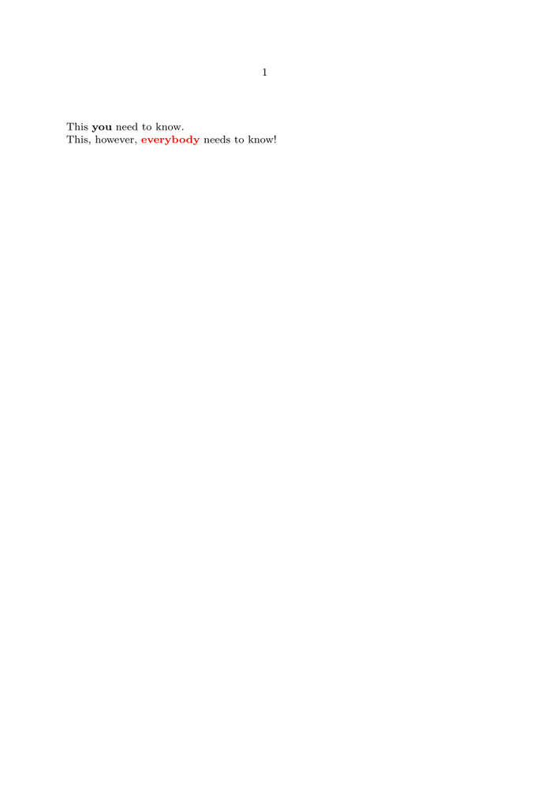

Syntax (autogenerated)
| \definehighlight[...][...][...=...,...] | |
| [...] | name |
| [...] | name |
| ...=...,... | inherits from \setuphighlight |
Description
Highlights are a generic facility for defining and maintaining different emphases.
Highlights are respected by the XML export (see \setupbackend),
resulting in a tag highlight, with the respective names as
argument to the attribute detail.
When converting from font switches (as {\bf text} to defined highlights,
be sure to convert the syntax to command syntax ( \important{text} ).
Example
-
\definehighlight [important] [style=bold] %% define a highlight \definehighlight [reallyimportant] [important] %% inherit setups \setuphighlight [reallyimportant] [color=red] %% modify the copy \starttext This \important{you} need to know.\par This, however, \reallyimportant{everybody} needs to know! \stoptext
- 
<document language="en" file="example-highlight" date="Sat Jun 16 12:20:48 2012" context="2012.06.13 23:46" version="0.30" xmlns:m="http://www.w3.org/1998/Math/MathML"> This <highlight detail="important">you</highlight> need to know. <break/> This, however, <highlight detail="reallyimportant">everybody</highlight> needs to know! </document>
See Also
Help from ConTeXt-Mailinglist/Forum
All issues with: